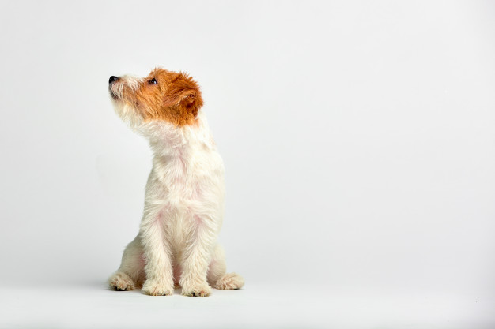
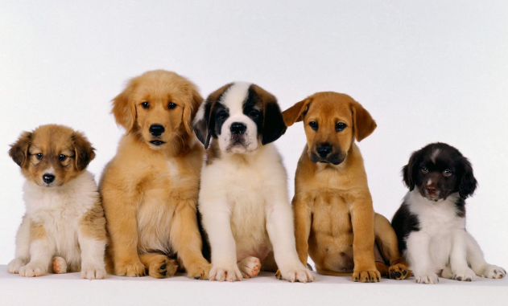
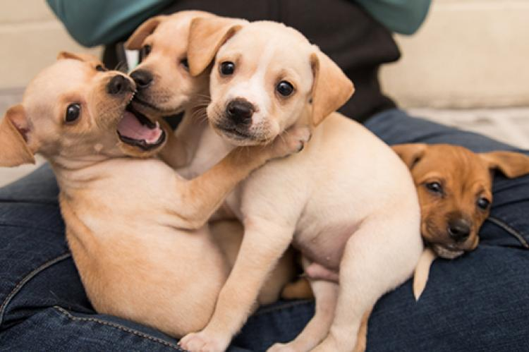

Puppies are some of the cutest animals on the planet. They are furry friends that many people consider their true companions. Puppies are apart of many families around the globe and are loved by most.

Puppies come in all sorts of shapes and sizes. There are more than 350 dog breeds in the world. The most popular breed in the world is the Labrador Retriever.

Puppies go through many stages of development after being born. For example, in the neonatal stage of life, puppies are completely dependent on their mothers for food and care.
